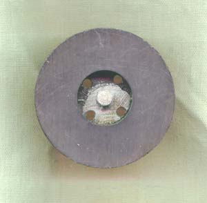
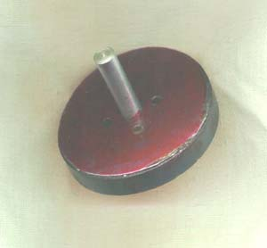
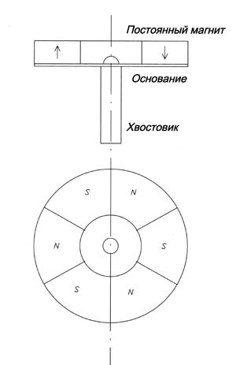
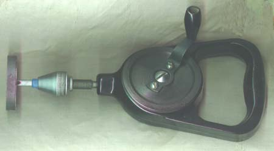

Устройство для размагничивания
стальных изделий (демагнетизатор)
на основе многополюсного кольцевого вращающегося магнита
Введение
Размагничивание стальных изделий может быть произведено посредством переменного магнитного поля с затухающей амплитудой [6]. Переменное магнитное поле может быть создано с помощью постоянных магнитов, приводимых во вращение. Затухание амплитуды магнитного поля происходит при удалении вращающейся магнитной системы от размагничиваемого объекта. Вращение может осуществляться с помощью ручных инструментов без использования электроэнергии.
Конструкция демагнетизатора
Внешний вид демагнетизатора показан на рис. 1, а чертеж конструкции - на рис. 2.


Рис. 1. Демагнетизатор на основе шестиполюсного кольцевого постоянного магнита (диаметр магнита 60 мм): вид снизу и сбоку.

Рис. 2. Конструкция демагнетизатора.
Демагнетизатор представляет из себя кольцевой постоянный шестиполюсный магнит (направление намагниченности аксиальное), приклеенный к стальному основанию. К основанию крепится хвостовик, который может быть вставлен в инструмент, способный создавать вращательное движение.
Напряженность магнитного поля на поверхности полюса 140000 А/м, на расстоянии 10 мм от полюса - 32000 А/м (материал магнита - феррит бария [3]). При работе демагнетизатора на расстоянии менее 10 мм от объекта этого достаточно для перемагничивания и, соответственно, размагничивания стали.
Вариант использования демагнетизатора показан на рис. 3. Хвостовик демагнетизатора закрепляется в патроне дрели. Дрель приводится во вращение. Частота вращения патрона может составлять примерно 1 ... 5 оборотов в секунду или больше. Демагнетизатор подводится к объекту, который необходимо размагнитить, на расстояние менее 10 мм (размагничиваемый объект обязательно должен быть зафиксирован), затем при необходимости осуществляется движение демагнетизатора вдоль поверхности объекта (змейкой). После этого демагнетизатор отводится от объекта. Для вращения демагнетизатора могут быть использованы и другие инструменты, например, электрическая дрель, сверлильный, токарный или наждачный станок.

Рис. 3. Демагнетизатор в комплекте с ручной дрелью.
Намагничивание постоянного магнита производилось с помощью установки импульсного намагничивания [5] в составе устройства намагничивающего импульсного 6-полюсного аксиального [7] и генератора мощных импульсов тока [1, 2]. Количество полюсов магнита может быть увеличено до 8 при использовании намагничивающего импульсного 8-полюсного устройства [8]. Для контроля магнитной индукции могут применяться тесламетры различных типов [4].
Ссылки:
21.04.2004
09.09.2005
01.02.2006
16.09.2006
22.06.2010
Альтернативные источники
энергии
Компьютеры и
Интернет
Магнитные поля
Механотронные системы
Перспективные
разработки
Электроника и
технология